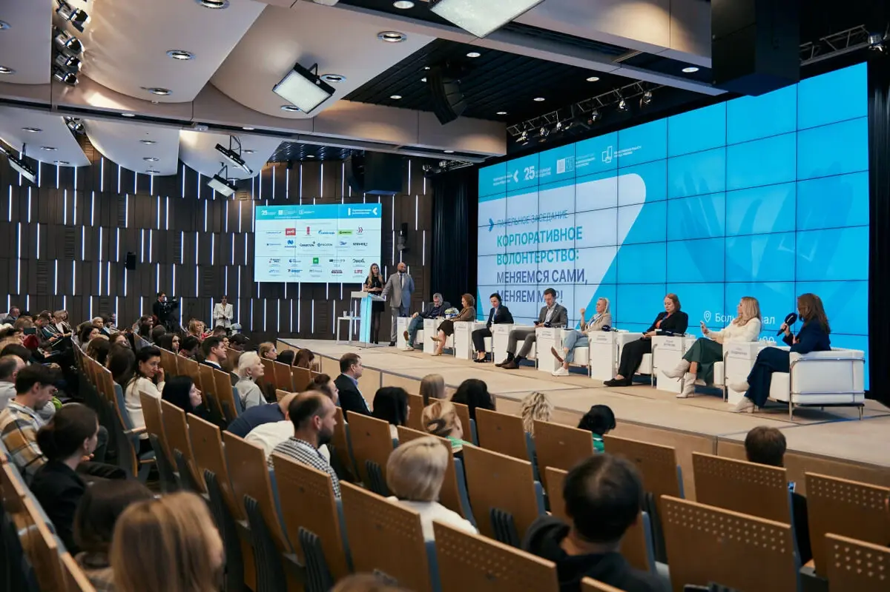

Видеостены из LCD дисплеев
Это профессиональное решение для ситуационных, диспетчерских центров, конференц-залов и переговорных комнат. Они обеспечивают высокую детализацию изображения, широкие углы обзора и бесперебойную работу 24/7. Модульная конструкция позволяет создавать экраны любого размера и конфигурации. Ультратонкие рамки обеспечивают целостную картинку, а антибликовое покрытие — комфортный просмотр. Идеальны для работы с графиками, видеонаблюдением и презентациями.
Выбрать формат